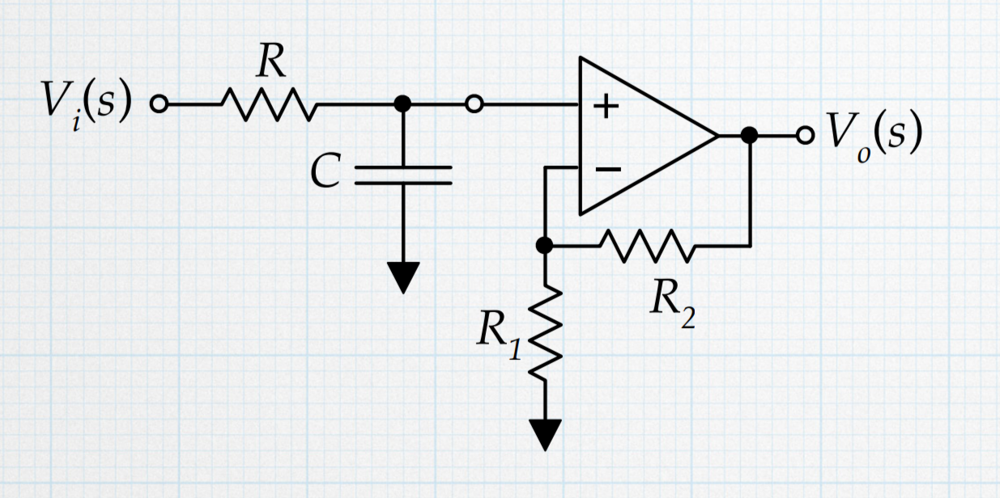

A low-pass filter is an electronic circuit or signal processing algorithm that allows low-frequency signals to pass through while attenuating (reducing the amplitude of) high-frequency signals. It's commonly used in audio applications, communications systems, and various other electronic devices to remove high-frequency noise or unwanted signals.
In the frequency domain, a low-pass filter has a characteristic that attenuates frequencies above a certain cutoff frequency while allowing frequencies below that cutoff to pass with minimal attenuation. The specific cutoff frequency and the rate of attenuation beyond that frequency depend on the design of the filter.
Low-pass filters can be implemented using various electronic components such as resistors, capacitors, and inductors, or through digital signal processing techniques in software. They are essential in many applications where it's necessary to isolate or extract low-frequency components from a signal while suppressing higher-frequency components.
high-pass filter
In signal processing, a high-pass filter is a type of filter that allows signals with a frequency higher than a certain cutoff frequency to pass through it while attenuating (reducing the amplitude of) signals with frequencies lower than the cutoff frequency. High-pass filters are commonly used in various applications such as audio processing, image processing, and telecommunications.
The design of a high-pass filter involves selecting a cutoff frequency, which determines the point at which the filter begins to attenuate lower frequency signals. There are different types of high-pass filters, including passive filters (which use passive electronic components like resistors, capacitors, and inductors) and active filters (which incorporate active components like operational amplifiers).
High-pass filters are useful for tasks such as removing low-frequency noise from signals, emphasizing high-frequency components, and separating high-frequency and low-frequency components in a signal. They are often employed in combination with low-pass filters to create band-pass filters, which only allow signals within a certain frequency range to pass through.
with gain low pass
A low-pass filter with gain is a type of filter that allows signals with frequencies lower than a certain cutoff frequency to pass through while also amplifying them. This type of filter combines the characteristics of a low-pass filter, which attenuates high-frequency signals, with the ability to increase the amplitude (gain) of the passed signals.
Low-pass filters with gain are commonly used in audio processing and equalization applications, where it's desired to emphasize certain low-frequency components of a signal while attenuating higher frequencies. These filters can be implemented using various circuit configurations, including active filter designs that incorporate operational amplifiers.
The design of a low-pass filter with gain involves selecting parameters such as the cutoff frequency, gain level, and the desired frequency response characteristics. Careful consideration is necessary to ensure that the filter meets the specific requirements of the application, such as the desired frequency range and the amount of gain needed.
Overall, low-pass filters with gain are versatile tools in signal processing, allowing for targeted amplification and manipulation of low-frequency components while suppressing unwanted high-frequency content

with gain high pass
high-pass filter with gain is a type of filter that allows signals with frequencies higher than a certain cutoff frequency to pass through while also amplifying them. This type of filter combines the characteristics of a high-pass filter, which attenuates low-frequency signals, with the ability to increase the amplitude (gain) of the passed signals.
High-pass filters with gain are commonly used in audio processing, where it's desired to emphasize certain high-frequency components of a signal while attenuating lower frequencies. They can also be found in various other applications such as telecommunications, instrumentation, and control systems.
These filters can be implemented using different circuit configurations, including active filter designs that incorporate operational amplifiers. The design parameters typically include the cutoff frequency, gain level, and desired frequency response characteristics.
By carefully selecting these parameters, a high-pass filter with gain can be tailored to meet specific application requirements, such as the desired frequency range, the amount of gain needed, and the desired level of attenuation for frequencies below the cutoff frequency.
In summary, high-pass filters with gain are valuable tools in signal processing, allowing for targeted amplification and manipulation of high-frequency components while attenuating unwanted low-frequency content.
low pass with inverting configuration
A first-order low-pass filter with an inverting configuration is a circuit typically constructed using an operational amplifier (op-amp) and two passive components: a resistor (R) and a capacitor (c). The input signal is applied to the inverting (-) input terminal of the op-amp, and the output is taken from the op-amp's output terminal. The capacitor is placed in series with the input resistor ( R ) in the op-amp's feedback loop.
This configuration allows lower frequency signals to pass through while attenuating higher frequency signals. The cutoff frequency ( fc ) of the filter is determined by the values of the resistor and capacitor, and the gain in the passband is determined by the ratio of the feedback resistor to the input resistor.
high pass with inverting configuration
A first-order high-pass filter with an inverting configuration is a circuit typically built using an operational amplifier (op-amp) and two passive components: a resistor ( R ) and a capacitor (C). The input signal is applied to the inverting (-) input terminal of the op-amp, and the output is taken from the op-amp's output terminal.
The capacitor is placed in parallel with the feedback resistor ( R ) in the op-amp's feedback loop. This configuration allows higher frequency signals to pass through while attenuating lower frequency signals. The cutoff frequency (f_c) of the filter is determined by the values of the resistor and capacitor, and the gain in the passband is determined by the ratio of the feedback resistor to the input resistor.